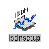

ISDN
ISDN (Integrated Services Digital Network) lar deg kommunisere med andre systemer og nettverk via høyhastighets telefonlinje som om du kommuniserer med andre systemer og nettverk via en Ethernet kabel. Når du har etablert en ISDN forbindelse, kan du bruke eksakt de samme Unix kommandoer og Indigo Magic Desktop metoder til å logge seg inn på andre systemer eller å overføre filer.
Indy leveres med all nødvendig maskin- og programvare for ISDN forbindelse. ISDN på en Indy arbeidsstasjon støtter både PPP og ASI.
ISDN Setup er et enkelt verktøy som hjelper deg å konfigurere oppsettet for ISDN linjen.
PPP (Point-to-Point Protocol) Setup er et enkelt verktøy for å konfigurere PPP oppsettet.
Oppdatert, 6. juni 1995